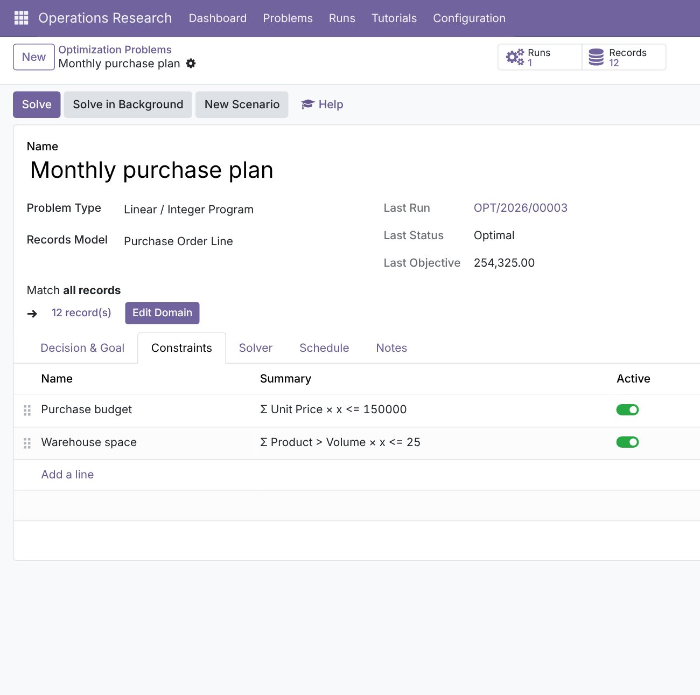
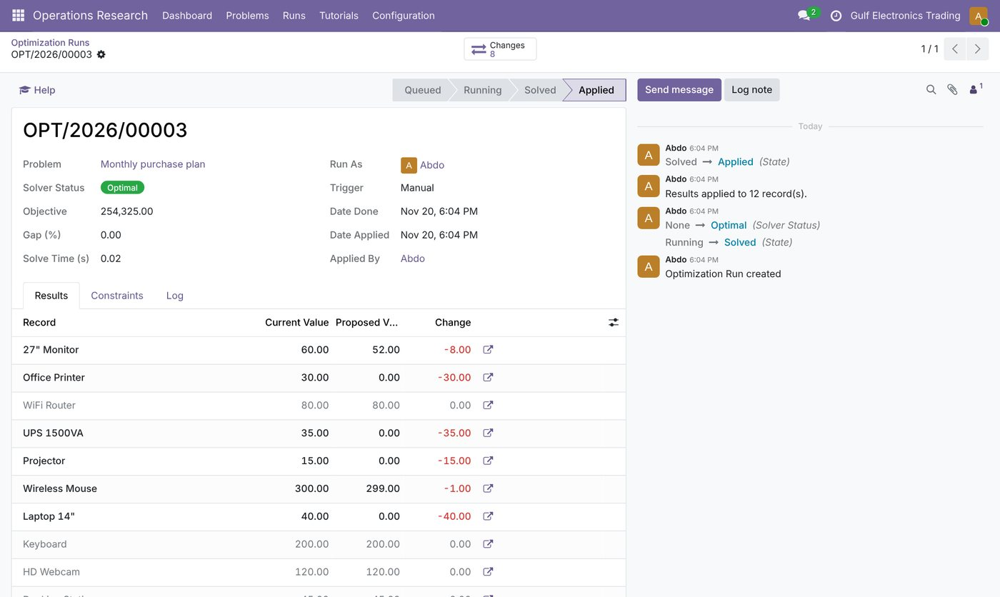
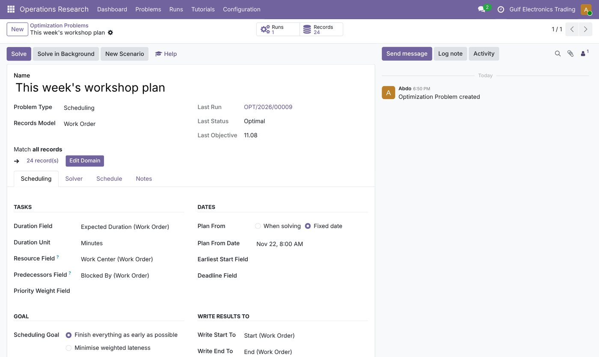

Three real examples, three departments
Recorded on standard Odoo apps with a sample trading company. No custom code.
1. Sales & Purchase: how much should we buy?
Customers ordered 12 products. You have SAR 150,000 and 25 m³ of free space. Decide the quantity on each RFQ line, goal: cover the most sales revenue, limits: budget, warehouse space, never more than the sales need.
+27% sales covered from the same budget (SAR 254,325 vs 199,800 when buying down the list).


2. Inventory & Logistics: plan tomorrow's deliveries
18 delivery orders, 3 vans of 1,200 kg. Decide which van takes each delivery and the order of stops, goal: fewest kilometres, limits: van capacity, start and end at the warehouse. Distances come from your contacts' map coordinates.
-44% driving (225 km vs 405 km planned by hand), about 54,000 SAR a year in fuel and wear.

3. Manufacturing: plan the workshop
6 manufacturing orders, 24 work orders on 4 work centers. Decide the start and end of every work order, goal: finish everything as early as possible, limits: one job at a time per work center, each step waits for the one before it.
-38% time: everything done in 11.1 hours instead of 17.8 (first come, first served).


The same three parts work everywhere: which sales orders to deliver first when stock is short, which vendor to buy each product from, which vendor bills to pay this week with the cash you have, who teaches which class, which project to fund… on standard or custom models.